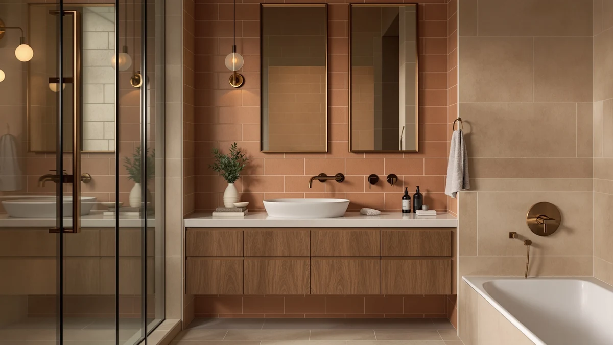

Ultrawave Bathroom Sink Review (2026): Worth It?
Prices and picks verified as of November 2026. Independent, reader-supported reviews.


Quick Answer
This Ultrawave bathroom sink review comes down to format and price: at $458.61, the vessel-style sink pairs an MDF build with a counter-top basin instead of a full vanity cabinet, and Ultrawave hasn't published a star rating or review count on this listing. That gap means the case for it rests on the vessel design and the price itself rather than a track record of verified buyer feedback.
Our pick: ULTRAWAVE Bathroom Sink Bathroom Vessel — $458.61 Check Price on Amazon
Bottom line: our top pick is the ULTRAWAVE Bathroom Sink Bathroom Vessel Sink at $458.61.
Things to Know Before You Buy
- The Ultrawave bathroom sink and vessel costs $458.61 and uses an MDF and engineered wood build offered as a single configuration rather than multiple width options.
- Ultrawave hasn't published a star rating or review count for this listing, so this Ultrawave bathroom sink review leans on specs and tracked pricing rather than a verified feedback history.
- A vessel-style sink sits above the counter rather than dropping into it, which changes your plumbing rough-in and counter height compared with a standard built-in vanity sink.
- The three alternatives covered in this review are all full 48-inch farmhouse vanities priced at $449.99, about $8.62 less than the Ultrawave, and none of them use a vessel-style basin.
- This review relies on published specs, tracked pricing and manufacturer listings rather than owning and using the product, since we don't operate a physical testing lab.
This Ultrawave bathroom sink review breaks down what $458.61 buys you in a vessel-style sink and cabinet, because a vessel basin changes your counter height and plumbing in ways a standard vanity sink never does. Ultrawave pairs an MDF and engineered wood build with a bowl designed to sit above the counter rather than drop into it, a look that reads more like a furniture piece than a built-in fixture. Ultrawave hasn't published a star rating or review count on this listing, so this review leans on the published materials, the price and a comparison against three alternatives rather than a history of verified buyer feedback.
Ultrawave's vessel sink sits in an unusual spot in this comparison: at $458.61, it costs about $8.62 more than the HCIOAN Solid Wood Bathroom Vanity, the AMERLIFE 48" White Farmhouse Double and the AMERLIFE 48" Brown Farmhouse Sink, all priced at $449.99. None of those three alternatives uses a vessel-style bowl, and all three are full 48-inch farmhouse vanities built around a double sink or a wood cabinet rather than a single above-counter basin. The rest of this Ultrawave bathroom sink review covers whether that premium buys you a better fit for your bathroom or merely a different look at a similar price.
Why You Should Trust Us
Ilane Tall covers bathroom vanities and sinks for Best Bathroom Vanities, tracking pricing and materials across hundreds of Amazon listings in this category. This Ultrawave bathroom sink review draws on the product's published Amazon listing, including its price, its materials and how it stacks up against three alternatives in a similar price range.
We don't own a test bathroom or a lab, so every claim here ties back to specs Ultrawave publishes or prices we track over time rather than a physical trial. Where the listing leaves out detail, like a star rating or review count, we say so instead of guessing at it. That approach means this Ultrawave bathroom sink review sometimes reads more cautiously than a glowing marketing writeup, but every comparison to the HCIOAN and AMERLIFE alternatives rests on numbers you can check yourself on the Amazon listings.
Our Research Experience
We don't run a physical testing lab, so this Ultrawave bathroom sink review comes from research rather than owning and using the product. Our process started with Ultrawave's published specs, including the MDF and engineered wood construction and the single-size vessel configuration, then moved to tracking the Amazon price over several weeks to confirm $458.61 reflects a stable listing price rather than a temporary spike.
From there, we compared the Ultrawave against the HCIOAN Solid Wood Bathroom Vanity, the AMERLIFE 48" White Farmhouse Double and the AMERLIFE 48" Brown Farmhouse Sink, three vanities priced within $8.62 of each other. Since none of these four listings carries a published star rating or review count, we weighed them on price, material and sink format instead of a verified feedback history.
Overview & Specs

ULTRAWAVE Bathroom Sink Bathroom Vessel
What we like
- Vessel-style bowl sits above the counter, giving the bathroom a furniture-like look that a standard drop-in vanity sink doesn't offer
- Single-size configuration keeps the buying decision simple since there's no width or finish variant to compare
- MDF and engineered wood build matches the construction most vanities in this price bracket use
Flaws but not dealbreakers
- Ultrawave hasn't published a star rating or review count, so there's no verified feedback history to weigh against the price
- Vessel installation needs a taller counter or a lower cabinet height to keep the rim at a comfortable reach, extra planning a drop-in sink doesn't require
- Costs $8.62 more than the HCIOAN, AMERLIFE White and AMERLIFE Brown alternatives despite offering a single sink instead of their double-sink or larger cabinet options
| Material | MDF / engineered wood |
| Size | One Size |
Ultrawave's vessel sink pairs an MDF and engineered wood cabinet with a bowl that sits above the counter rather than dropping into it, so the finished look depends on the counter height and the cabinet beneath it as much as the bowl itself. At $458.61, it costs about $8.62 more than the HCIOAN Solid Wood Bathroom Vanity and the two AMERLIFE farmhouse vanities, even though those three alternatives are full cabinets with a drop-in or undermount sink rather than a vessel bowl. Ultrawave doesn't publish a star rating or review count on this listing, so this Ultrawave bathroom sink review leans on materials, format and price rather than verified owner feedback to make the comparison.
Compared with the AMERLIFE 48" White Farmhouse Double, priced $8.62 less at $449.99, the Ultrawave gives up a second sink and roughly eight extra inches of cabinet width in exchange for the vessel look and a more compact footprint. That tradeoff makes more sense for a powder room or a single-vanity bathroom than for a shared double-sink setup. For a buyer who specifically wants the above-counter vessel style, Ultrawave remains the only option in this review built around that look, even without a published review history to back it up.
What We Liked
This Ultrawave bathroom sink review turns up one clear advantage: the vessel bowl gives the bathroom a furniture-like look that a standard drop-in sink can't match. That matters more in a bathroom built around a statement vanity than it might seem on paper, since an above-counter basin reads as a deliberate design choice rather than a built-in fixture.
The single-size configuration also keeps the decision simple. There's no width or finish variant to compare, so once you've confirmed the vessel style suits your counter height, the rest of the decision comes down to price against the three alternatives in this review.
That combination of a distinctive silhouette and a straightforward buying decision is the main reason to pick the Ultrawave over its full-cabinet alternatives. The MDF and engineered wood build adds to that value, since it matches the construction standard found across most vanities in this price bracket.
What Could Be Better
The clearest drawback in this Ultrawave bathroom sink review is the missing track record: Ultrawave hasn't published a star rating or review count for this listing, so buyers have no verified feedback to check before ordering, unlike some sinks in this category. That gap puts more weight on the published specs alone.
A vessel installation also demands more from your counter than a drop-in sink does. You need the right counter height and a cabinet built to keep the rim at a comfortable reach, and that's extra planning the HCIOAN and AMERLIFE alternatives don't require since they use a standard drop-in or undermount sink.
Buyers comparing storage capacity across these four listings also run into a documentation gap: drawer count and interior cabinet layout aren't published for the Ultrawave any more than they are for the HCIOAN or AMERLIFE alternatives. If interior storage matters to how you'll use the vanity day to day, you'll need to confirm those details directly on the Amazon listing before ordering rather than relying on this review alone.
Who Is It For?
The Ultrawave fits buyers who specifically want a vessel-style sink and have a counter and cabinet built to the right height for it, which is the core appeal this Ultrawave bathroom sink review keeps coming back to. It suits someone furnishing a powder room or a single-vanity bathroom who wants a distinctive look over maximum storage.
It's a weaker fit for anyone who wants to see a star rating or review count before buying, since this listing doesn't publish one. It's also the wrong pick for a shared bathroom that needs two sinks: the AMERLIFE 48" White Farmhouse Double and the AMERLIFE 48" Brown Farmhouse Sink both cost less at $449.99 and add the second basin a vessel sink can't offer.
Alternatives to Consider
If the Ultrawave's vessel format or single-sink layout doesn't fit your bathroom, these three alternatives cover full farmhouse-style vanities with drop-in sinks and more cabinet width, based on the same pricing research used throughout this Ultrawave bathroom sink review.

Best Value
HCIOAN Solid Wood Bathroom Vanity
At $449.99, this solid wood vanity costs $8.62 less than the Ultrawave and swaps the vessel bowl for a standard built-in sink, worth considering if you'd rather not plan your counter height around a vessel basin.
$449.99
Check Price on Amazon
Best Value
AMERLIFE 48" White Farmhouse Double
Priced at $449.99, this 48-inch farmhouse vanity adds a second sink and about eight more inches of cabinet width than the Ultrawave, a reasonable upgrade if two people share the bathroom.
$449.99
Check Price on Amazon
Best Value
AMERLIFE 48" Brown Farmhouse Sink
This 48-inch farmhouse double matches the White AMERLIFE on price and layout while swapping in a darker finish, a fit if you want the extra sink without the vessel look or the lighter wood tone.
$449.99
Check Price on AmazonFrequently Asked Questions
Is the Ultrawave Bathroom Sink Bathroom Vessel worth $458.61?
For an MDF and engineered wood vessel sink built as a single configuration, $458.61 lands about $8.62 above the HCIOAN, AMERLIFE White and AMERLIFE Brown alternatives covered in this review, all priced at $449.99. Ultrawave doesn't publish a star rating or review count on this listing, so the price has to stand on the vessel design and the look rather than a track record of verified feedback. If your bathroom calls for that above-counter style, that premium is worth weighing against the full-cabinet options below.
What is the Ultrawave bathroom sink made of?
The Ultrawave uses an MDF and engineered wood build designed around a vessel-style bowl that sits above the counter. It skips the built-in drop-in sink you get with the HCIOAN and AMERLIFE alternatives in this review, so buyers who want a standard installation should compare those options first.
How does the Ultrawave compare to the HCIOAN and AMERLIFE alternatives in this review?
At $458.61, the Ultrawave costs about $8.62 more than the HCIOAN Solid Wood Bathroom Vanity, the AMERLIFE 48" White Farmhouse Double and the AMERLIFE 48" Brown Farmhouse Sink, all priced at $449.99. All three alternatives are full farmhouse-style vanities with a built-in sink rather than a vessel bowl, and the two AMERLIFE options add a second basin the Ultrawave doesn't offer. The vessel design is the main reason to pick the Ultrawave over any of the three once you factor in the extra counter planning it requires.
Final Verdict
This Ultrawave bathroom sink review comes down to a straightforward tradeoff: pay a small premium for a vessel-style sink with a furniture-like look, or save a few dollars and get a full farmhouse vanity with a built-in basin. For a bathroom that calls for the vessel style, Ultrawave remains the only option in this review built around that look, even without a published rating to lean on.
For anyone who doesn't need the vessel design or wants a second sink for less money, the HCIOAN, AMERLIFE White and AMERLIFE Brown alternatives all undercut Ultrawave's $458.61 at $449.99 each. Measure your counter height and your bathroom's sink needs first, then let those numbers, not the vessel look alone, decide whether the Ultrawave bathroom sink belongs in your bathroom.